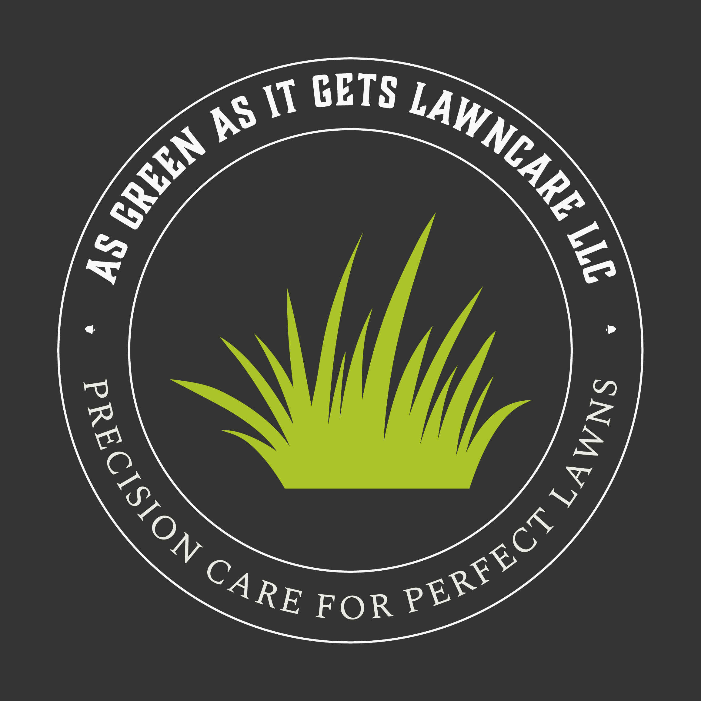
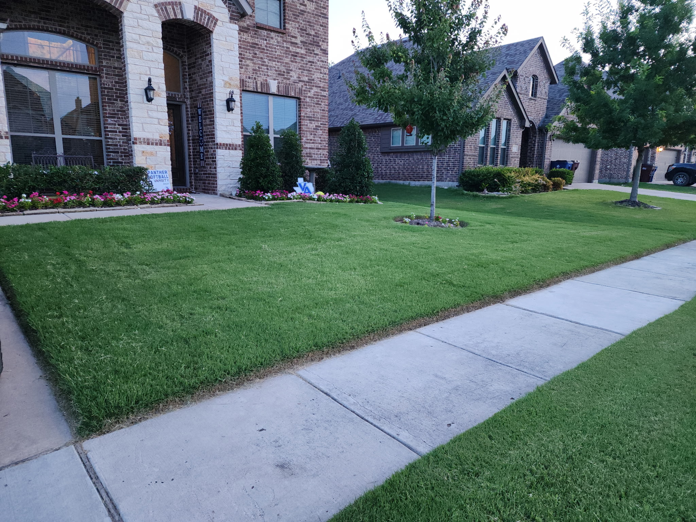
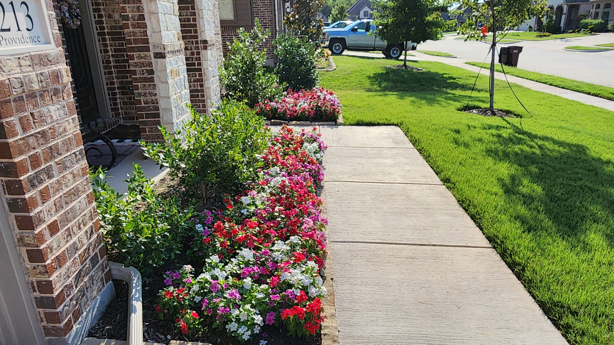
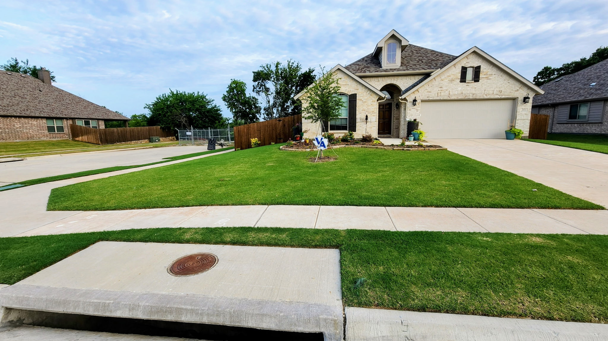
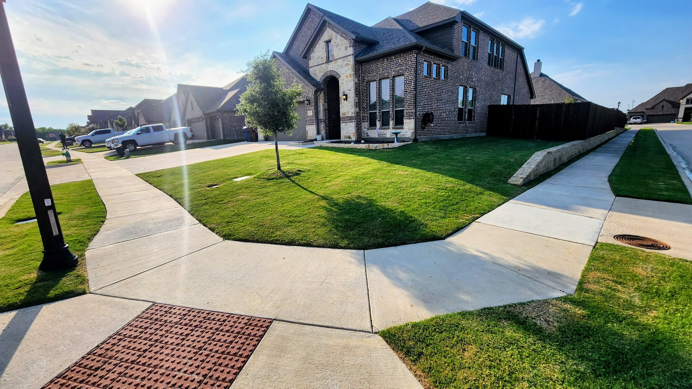
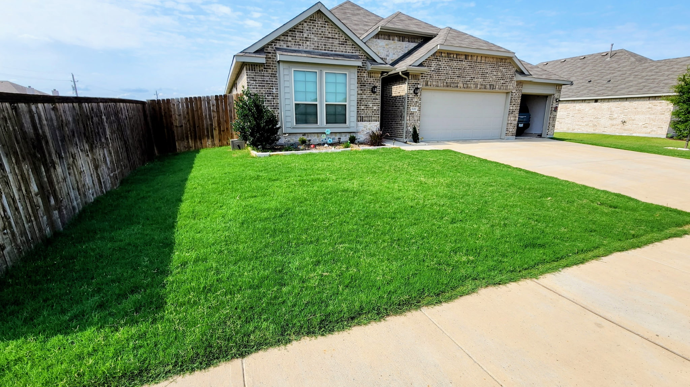

Pre-Emergent Weed Prevention
Seasonally timed applications designed to prevent targeted weeds before they emerge.

AS GREEN AS IT GETS LAWNCARE LLC · VAN ALSTYNE, TX☎ 509-431-5621VAN ALSTYNE · NORTH TEXAS
Professional chemical lawn care, targeted weed treatments, tree and shrub care, and specialty fire ant control—tailored to your property.
Locally based in Van Alstyne, Texas · Serving surrounding North Texas communities
WHAT WE DO
Focused treatments, not mowing or landscaping. Every property has different needs; we'll help identify the right approach.
Seasonally timed applications designed to prevent targeted weeds before they emerge.
Targeted treatment for existing weeds in established turf.
Nutrient programs matched to grass type, growing conditions, and season.
Assessment and treatment options for damaging turf insects.
Identification and treatment planning for common lawn disease concerns.
Soil-focused care to support stronger roots and resilient turf.
Planned applications aligned with North Texas growing seasons.
Care plans to address ornamental plant health, insects, and disease.
Evaluate symptoms and identify appropriate next steps.
SPECIALTY SERVICE
Ask about our specialty fire ant treatment program with up to 10–12 months of control guaranteed, subject to the treatment agreement and service conditions.
Important: This guarantee applies exclusively to qualifying specialty fire ant control services. No other lawn, tree, shrub, or pest treatment is covered by this guarantee.
REQUEST FIRE ANT SERVICE →CONTROL GUARANTEE*
*Fire ant service only; terms and eligibility to be confirmed with owner.REAL PROPERTIES · REAL PHOTOS
Explore photographs of residential properties shared with As Green As It Gets Lawncare LLC. Photos illustrate properties and landscaping; individual treatment outcomes may vary.





LOCAL EXPERTISE
As Green As It Gets Lawncare LLC is locally operated from Van Alstyne, Texas, and focuses on chemical lawn treatments and plant health services for North Texas properties.
From seasonal weed management to specialized fire ant treatments, our approach starts with understanding what your property needs.
PROUDLY SERVING NORTH TEXAS
Service inquiries welcome from Van Alstyne, McKinney, Allen, Frisco, Plano, Prosper, and nearby communities. Availability depends on the property address.
LET'S TALK ABOUT YOUR LAWN
Tell us what you're seeing. We'll follow up to discuss your property and treatment options.
Form submissions require a connected form service before launch. Until then, use the phone number above.